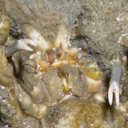
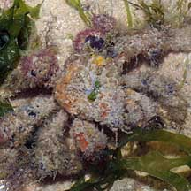
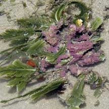
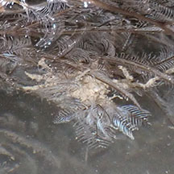
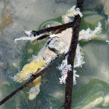

|
|
| crabs text index | photo index |
| Phylum Arthropoda > Subphylum Crustacea > Class Malacostraca > Order Decapoda > Brachyurans > Superfamily Majoidea |
| Velcro
crab Camposcia retusa Family Inachidae updated Dec 2019
Where seen? This superbly disguised crab is commonly encountered on our Northern shores, on coral rubble and seagrasse areas. But it requires a keen eye to spot! Features: Body width 3-6cm. Body tear-drop shaped, without large spines on the sides. Often all you can see are its tiny eyes on long curved eyestalks at the tip of its pointed head. Pincers short cylindrical, claws slender and curving. |
|
 Underside. |
 Pincers are undecorated. |

| This crab snips off bits of sponges and seaweed or selects suitable
shells and debris. These are then stuck firmly onto the fine, hooked
hairs which densely cover its body and legs and thus act like the
'velcro' after which it is named. Some
seem to stick on a protruding 'head gear' on their heads. These 'decorations' not only camouflage the crab, but the distasteful nature of some sponges might also give predators second thoughts about taking a bite out of the crab. The attached sponges and algae often continue to grow. Tiny animals might settle on the sponges. What does it eat? Relying on its disguise, the crab moves slowly, feeding on small creatures. Its dainty narrow feeding pincers are often the only parts of its body left unadorned. Status and threats: This crab is listed as 'Vulnerable' on the Red List of threatened animals of Singapore. It is popular in the aquarium trade and the Singapore Red Data Book states that its collection from Singapore should be controlled or stopped. |
|
 Pulau Sekudu, Jul 08 |
 Chek Jawa, Jul 03 |
 Chek Jawa, Jun 03 |
 Upside down crab (showing its small undecorated pincers) righting itself. Changi, Dec 17 |
 Pulau Sekudu, Aug 24 |
| Velcro crabs on Singapore shores |
On wildsingapore
flickr
|
| Other sightings on Singapore shores |
 Beting Bronok, Jun 18 |
| Filmed at Sisters
Island, Dec 10 decorator crab (HD) from SgBeachBum on Vimeo. |
Links
|